POLIS
BETA 0.1 · LINUX & WINDOWS
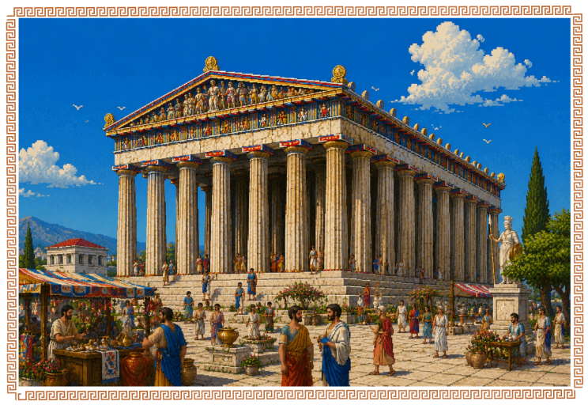
Dawno temu, gdy bogowie jeszcze chodzili po ziemi i słuchali modlitw śmiertelnych, cztery wielkie miasta rywalizowały o chwałę Hellady — Sparta, Teby, Ateny i Korynt.
Jesteś archontem swojego polis. Wybierz boga-patrona — jego imię będzie towarzyszyć ci przez całą grę.
Agora otacza serce miasta — to tu schodzą się drogi, rodzą się połączenia, rośnie siła polis. Wytyczaj szlaki. Wznoś gospodarstwa. Otwieraj rynki. Każde połączenie dodaje siły twojemu polis — każdy rynek mnoży ją.
Bogowie patrzą. Hellada czeka.
Long ago, when gods still walked the earth and listened to mortal prayers, four great cities competed for the glory of Hellas — Sparta, Thebes, Athens, and Corinth.
You are the archon of your polis. Choose your patron god — their name will accompany you throughout the game.
The agora surrounds the heart of the city — here roads converge, connections are born, and the strength of the polis grows. Lay paths. Raise households. Open markets. Every connection adds power to your polis — every market multiplies it.
The gods are watching. Hellas awaits.
SIC MUNDUS CREATUS EST
INSTALACJAINSTALLATION
Pobierz polis-beta-0.1-linux.tar.gz i wykonaj poniższe kroki w terminalu:
- Otwórz terminal w folderze z pobranym plikiem
- Rozpakuj archiwum:
tar -xzf polis-beta-0.1-linux.tar.gz
- Wejdź do folderu:
cd polis-beta-0.1
- Nadaj uprawnienia (tylko pierwszy raz):
chmod +x run.sh polis
- Uruchom grę:
./run.sh
Download polis-beta-0.1-linux.tar.gz and follow these steps in terminal:
- Open terminal in the folder where you downloaded the file
- Extract the archive:
tar -xzf polis-beta-0.1-linux.tar.gz
- Enter the folder:
cd polis-beta-0.1
- Make executable (first time only):
chmod +x run.sh polis
- Run the game:
./run.sh
Pobierz polis-beta-0.1-windows.zip i wykonaj poniższe kroki:
- Kliknij prawym przyciskiem na plik .zip i wybierz "Wyodrębnij wszystko" / "Extract All"
- Otwórz wypakowany folder
polis-beta-0.1-windows
- Kliknij dwukrotnie
polis.exe
- Jeśli Windows wyświetli ostrzeżenie "nieznany wydawca" — kliknij "Więcej informacji" → "Uruchom mimo to"
Plik SDL2.dll musi znajdować się w tym samym folderze co polis.exe — jest już dołączony do archiwum.
Download polis-beta-0.1-windows.zip and follow these steps:
- Right-click the .zip file and select "Extract All"
- Open the extracted folder
polis-beta-0.1-windows
- Double-click
polis.exe
- If Windows shows "unknown publisher" warning — click "More info" → "Run anyway"
SDL2.dll must be in the same folder as polis.exe — it is already included in the archive.
Jeśli gra się zawiesi, w folderze pojawi się plik polis_log_*.txt. Prześlij go na adres podany w sekcji Kontakt wraz z opisem co się stało.
If the game crashes, a file named polis_log_*.txt will appear in the game folder. Send it to the address in the Contact section along with a description of what happened.
KONFIGURACJASETUP
MENU GŁÓWNEMAIN MENU
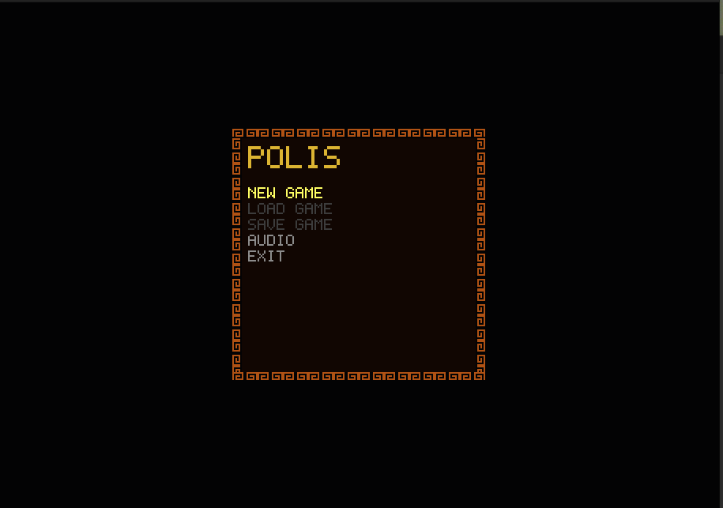
Menu główne / Main menu
Zacznij od NEW GAME. LOAD i SAVE stają się aktywne gdy istnieje zapisana gra.
Start with NEW GAME. LOAD and SAVE become active once a game exists.
ROZMIAR MAPYMAP SIZE
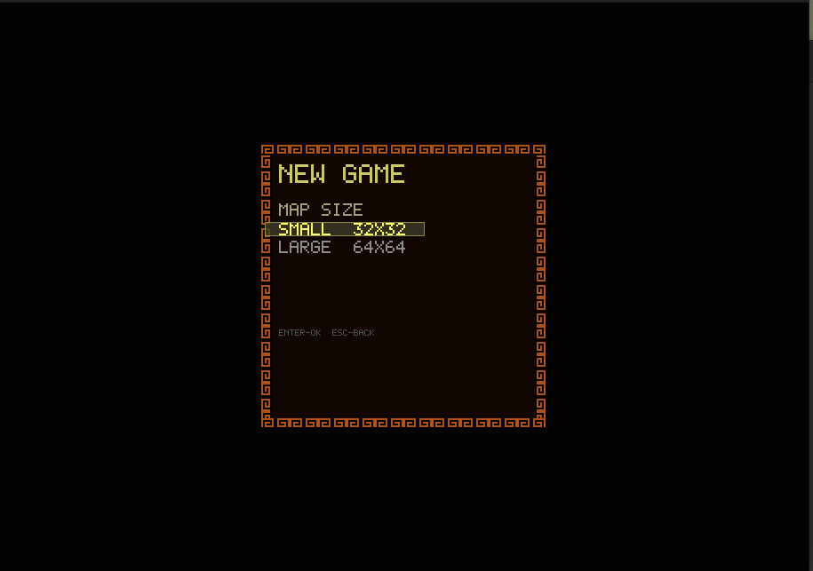
Wybór rozmiaru mapy / Map size selection
SMALL 32×32 zalecane dla pierwszej gry. LARGE 64×64 oferuje dłuższą i bardziej strategiczną rozgrywkę.
SMALL 32×32 recommended for your first game. LARGE 64×64 offers a longer, more strategic experience.
TRYB GRACZYPLAYERS
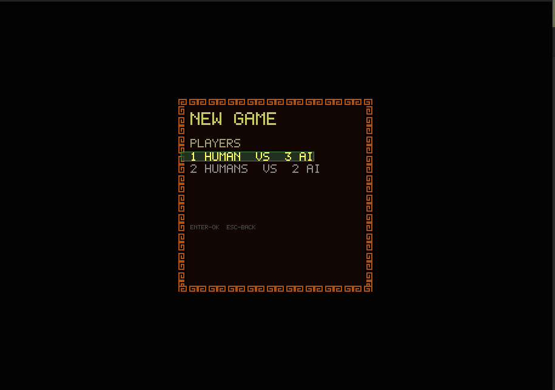
Wybór trybu / Player mode
1 HUMAN VS 3 AI — gra solo. 2 HUMANS VS 2 AI — dwóch graczy na jednej klawiaturze, naprzemiennie.
1 HUMAN VS 3 AI — solo play. 2 HUMANS VS 2 AI — two players on one keyboard, alternating turns.
WYBÓR POLISCHOOSE YOUR POLIS
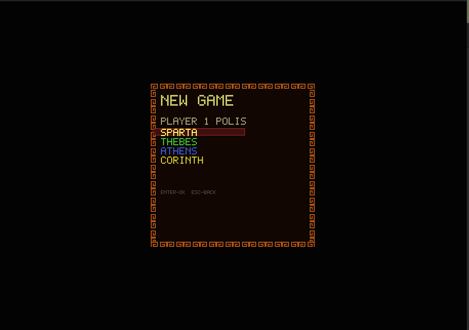
Wybór polis / Polis selection
Cztery polis, każde z własnym kolorem: Sparta (czerwony), Teby (zielony), Ateny (niebieski), Korynt (żółty).
Four poleis: Sparta (red), Thebes (green), Athens (blue), Corinth (yellow).
WYBÓR BOGA-PATRONACHOOSE YOUR PATRON GOD
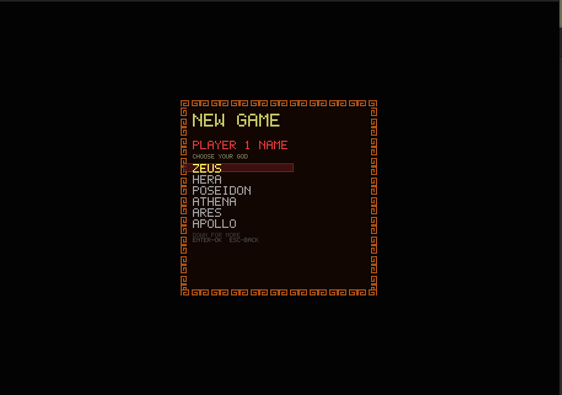
Wybór boga-patrona / Patron god selection
Bóg-patron towarzyszy ci przez całą grę. Przewiń w dół po więcej opcji.
Your patron god accompanies you throughout the game. Scroll down for more options.
UMIESZCZENIE MIASTAPLACE YOUR CITY
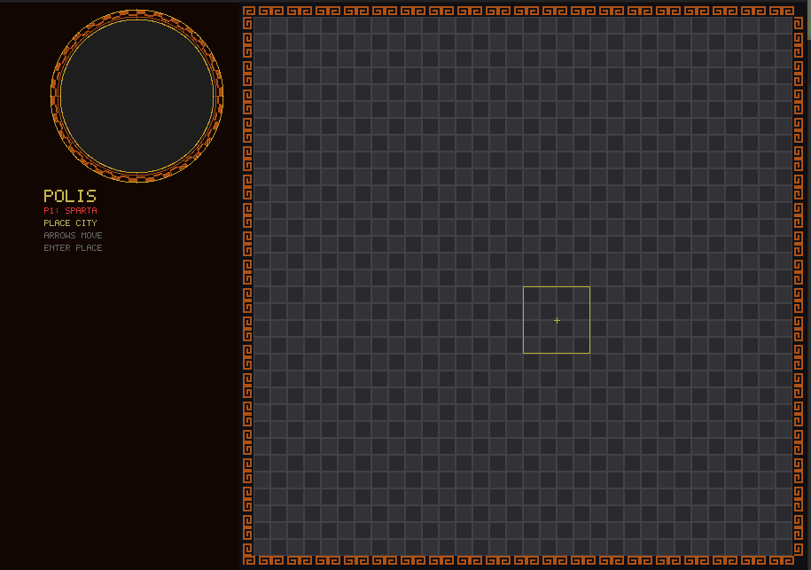
Umieszczenie miasta / City placement
Przesuń kursor strzałkami i naciśnij ENTER. Pozycja startowa wyznacza twoje pierwsze terytorium.
Move cursor with ARROWS and press ENTER. Your starting position determines initial territory.
ROZGRYWKAGAMEPLAY
MAPA — DIAGRAM WORONOJATHE MAP — VORONOI DIAGRAM
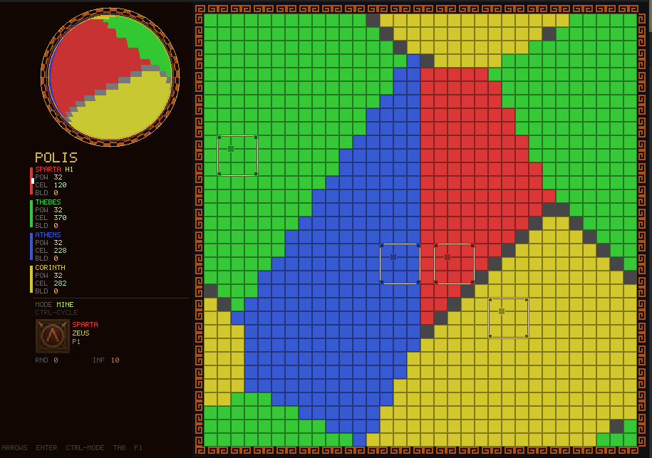
Mapa Woronoja — terytorium / Voronoi map — territory
Mapa to diagram Woronoja — każda komórka należy do najbliższego miasta. Im więcej POW ma twoje polis, tym większe terytorium.
Centrum miasta leży na styku czterech komórek.
Wokół niego widoczna jest cienka ramka — agora. To strefa będąca centrum sieci twojego polis. Gospodarstwa i drogi muszą być połączone z agorą żeby być aktywne.
The map is a Voronoi diagram — every cell belongs to the nearest city. The more POW your polis has, the larger your territory.
The city center sits at the intersection of four cells.
Around it, a thin frame marks the agora — the central zone of your polis network. Households and roads must connect back to the agora to be active.
STEROWANIECONTROLS
ARROWS
Ruch kursoraMove cursor
ENTER
Wykonaj akcjęPerform action
CTRL+UP
Zmień tryb — MINE → RADAR → BUILD → ROADCycle mode — MINE → RADAR → BUILD → ROAD
TAB
Pokaż sieć połączeńShow connected network
F1
Szybka pomocQuick guide
ESC
Menu główneMain menu
TRYB: RADARMODE: RADAR
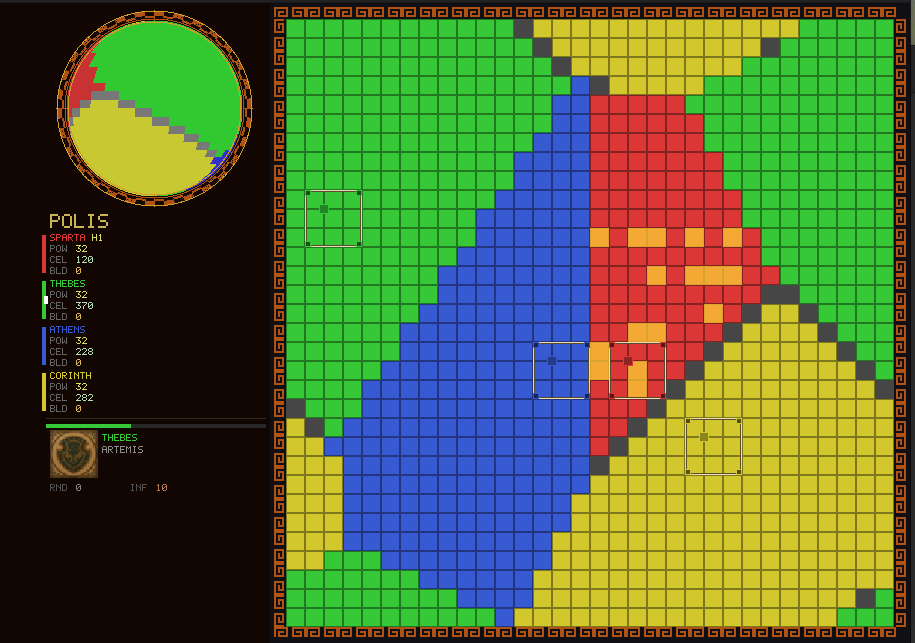
Tryb RADAR / RADAR mode
Przełączaj tryby przez CTRL+UP. W trybie RADAR naciśnij ENTER aby zeskanować obszar wokół kursora — ukryte zasoby zaświecą się na chwilę. Używaj radaru zanim zaczniesz budować.
Switch modes with CTRL+UP. In RADAR mode, press ENTER to scan the area — hidden resources glow briefly. Use radar before building.
TRYB: MINE — EKSPLORACJA TERENUMODE: MINE — EXPLORING THE TERRAIN
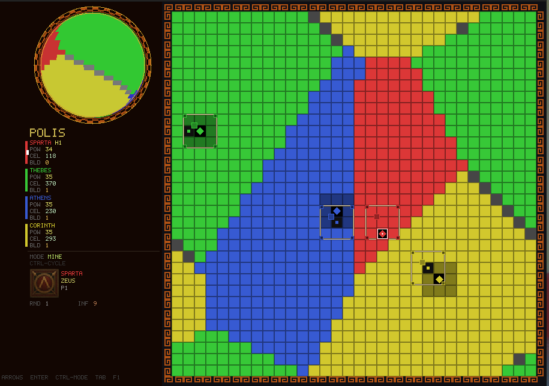
Tryb MINE — odkrycie zasobu / MINE mode — resource found
Pod powierzchnią mapy kryją się zasoby — ziemie, kamieniołomy, jeziora — ukryte w różnych kształtach. W trybie MINE przesuń kursor na ciemną nieznaną komórkę i naciśnij ENTER.
Trafienie — komórka zasobu zmienia kolor na kolor twojego polis. +2 POW. Dostajesz dodatkowy ruch i możesz kontynuować eksplorację tego samego zasobu.
Pudło — komórka jest pusta i otwiera się. Tura przechodzi do następnego gracza.
Otwarta komórka — komórka już była odkryta. Nic się nie dzieje, tura NIE przechodzi.
Beneath the map surface lie hidden resources — lands, quarries, lakes — concealed in various shapes. In MINE mode, move cursor to a dark unknown cell and press ENTER.
Hit — the cell takes the color of your polis. +2 POW. You get a bonus turn and can keep exploring the same resource.
Miss — the cell is empty and opens up. Turn passes to the next player.
Open cell — already revealed. Nothing happens, turn does NOT pass.
ODKRYCIE ZASOBURESOURCE REVEALED
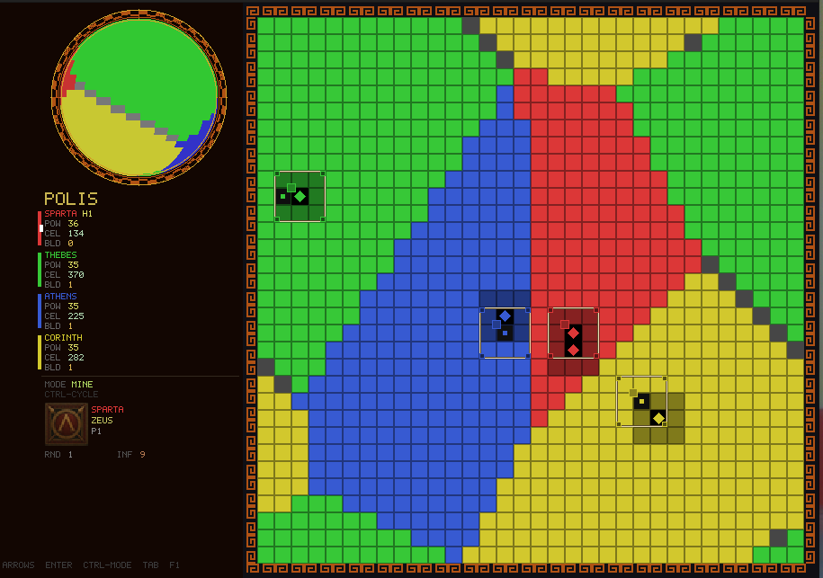
Zasób w pełni odkryty / Resource fully revealed
Gdy zbadasz wszystkie komórki ukrytego zasobu, zostaje on w pełni odkryty. Okoliczne komórki otwierają się — teren gotowy pod budowę gospodarstw.
When you have explored all cells of a hidden resource, it is fully revealed. The surrounding cells open up — terrain ready for building households.
TRYB: BUILD — BUDOWA GOSPODARSTWMODE: BUILD — PLACING HOUSEHOLDS
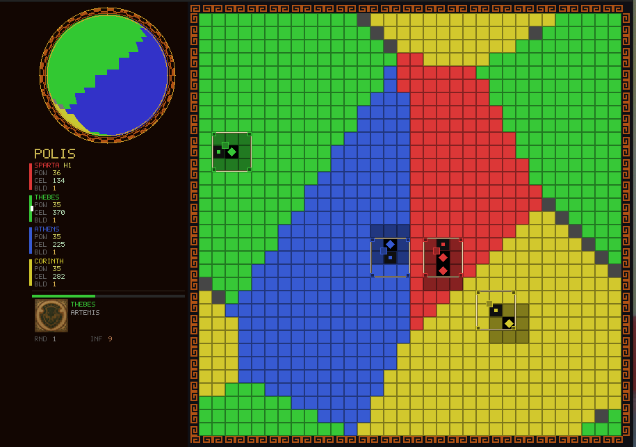
Tryb BUILD / Build mode
Przełącz na tryb BUILD. Możesz budować tylko na otwartych komórkach sąsiadujących z odkrytym zasobem. Każde podłączone gospodarstwо generuje +1 POW na rundę.
Gospodarstwо niepodłączone do agory nic nie produkuje. Połączenie jest wszystkim.
Switch to BUILD mode. You can only build on open cells adjacent to a revealed resource. Each connected household generates +1 POW per round.
A household not connected to the agora produces nothing. Connection is everything.
SIEĆ POŁĄCZEŃ (TAB)VIEWING THE NETWORK (TAB)
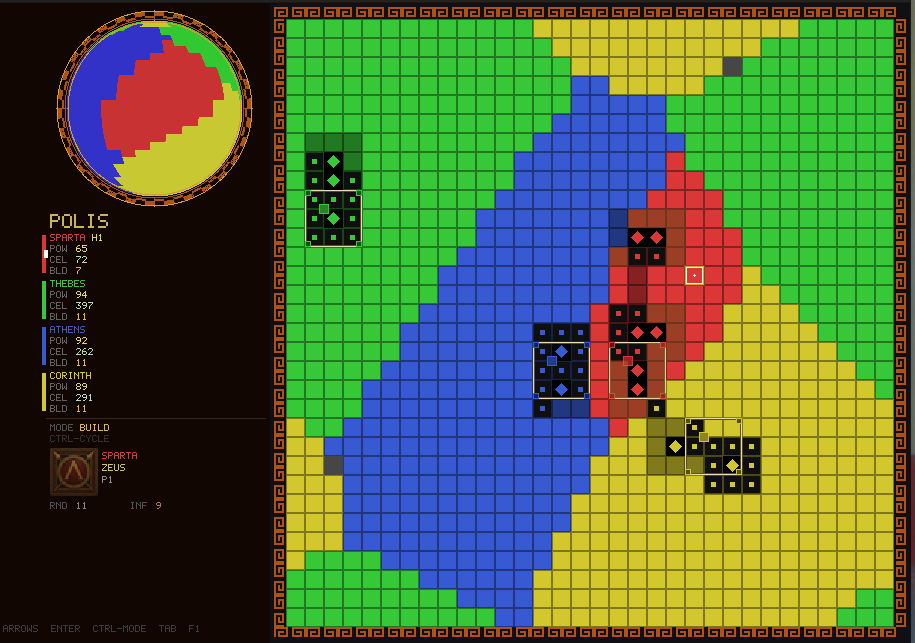
TAB — sieć połączeń / network view
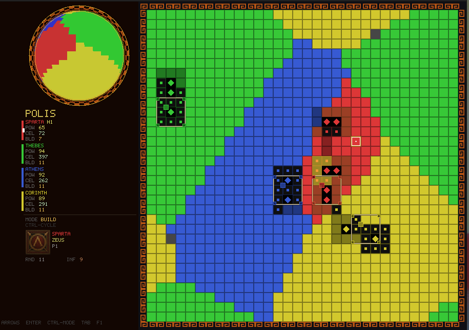
Szczegół agory / Agora detail
Naciśnij TAB aby włączyć widok sieci. Podłączone gospodarstwa i drogi są podświetlone. Użyj tego widoku aby znaleźć odizolowane gospodarstwa wymagające drogi.
Press TAB to toggle the network overlay. Connected households and roads are highlighted. Use this to identify isolated households that need a road.
TRYB: ROAD — BUDOWA DRÓGMODE: ROAD — BUILDING ROADS
Przed budową drogiBefore road
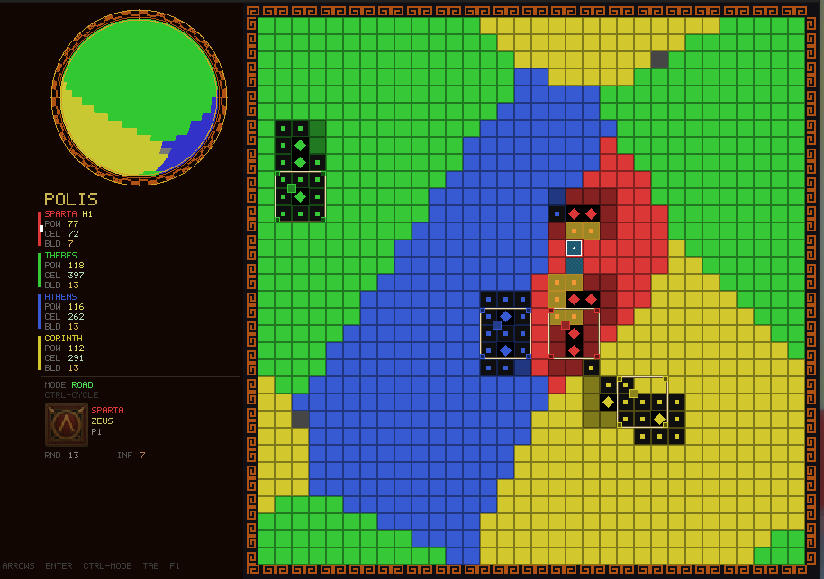
Po budowie — POW rośnieAfter road — POW jumps
Drogi łączą odizolowane gospodarstwa z siecią agory. Zauważ wartości POW w panelu — po podłączeniu przez drogę widać wyraźny wzrost siły.
Gospodarstwa sąsiadujące z podłączonymi gospodarstwami również stają się podłączone — sieć rozszerza się jak korzenie.
Roads connect isolated households to the agora network. Notice the POW values — after connecting via road, power increases sharply.
Households adjacent to connected households also become connected — the network spreads like roots.
EKONOMIAECONOMY
DOCHÓD NA RUNDĘINCOME PER ROUND
Każde podłączone gospodarstwо generuje +1 POW na rundę. Niepodłączone — nic.
Every connected household generates +1 POW per round. Disconnected ones produce nothing.
INFLACJAINFLATION
Co 10 rund wszystkie polis tracą 10% swojego POW. Z silną siecią twój dochód przewyższa inflację.
Every 10 rounds, all poleis lose 10% of their POW. With a strong network, your income outpaces inflation.
RYNEK — KLUCZ DO WZROSTUMARKET — THE KEY TO GROWTH
Co 100 podłączonych gospodarstw, najbliższe miastu staje się Rynkiem. Rynek ożywia wymianę i wzmacnia całą sieć — każdy podwaja dochód ze wszystkich gospodarstw:
Every 100 connected households, the one nearest your city becomes a Market. Each market doubles all household income:
1 RYNEK / MARKET = ×2
2 RYNKI / MARKETS = ×4
3 RYNKI / MARKETS = ×8
4 RYNKI / MARKETS = ×16
Strategia: priorytetem jest podłączanie gospodarstw. Zwarta sieć blisko agory bije rozległy rozproszony sieć za każdym razem.
Strategy: prioritize connecting households. A tight cluster near the agora beats a sprawling disconnected network every time.
ZAPIS I AUDIOSAVE & AUDIO
ZAPISYWANIE I WCZYTYWANIESAVING AND LOADING
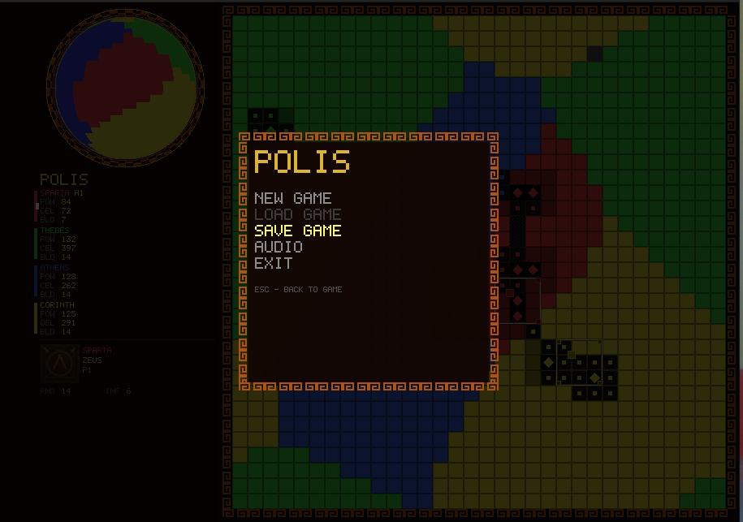
Menu ESC podczas gry / ESC menu in game
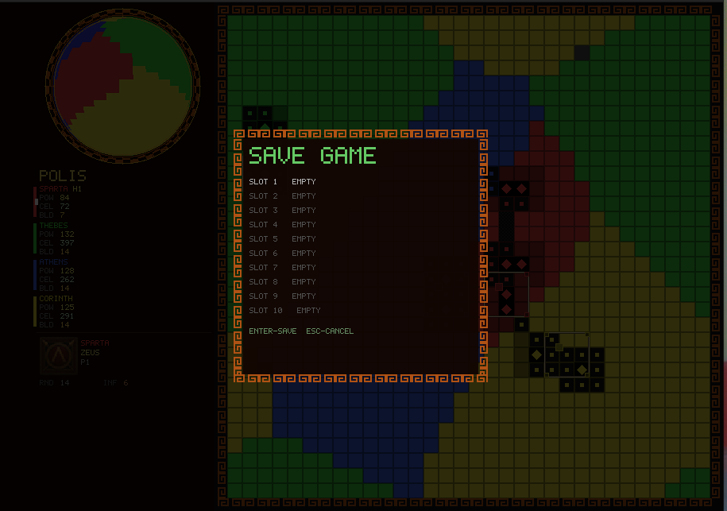
10 slotów zapisu / 10 save slots
Naciśnij ESC w dowolnym momencie gry. SAVE GAME zapisuje stan w jednym z 10 slotów. LOAD GAME przywraca poprzednią sesję.
Press ESC at any time. SAVE GAME stores your state in one of 10 slots. LOAD GAME restores a previous session.
USTAWIENIA AUDIOAUDIO SETTINGS
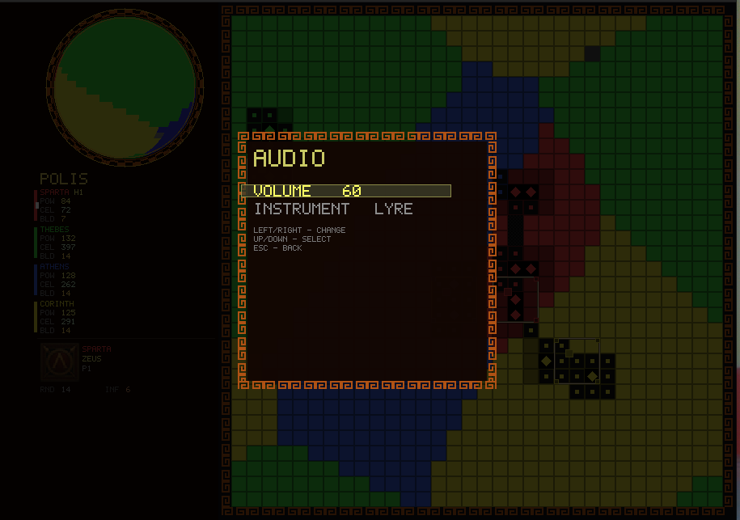
Ustawienia audio / Audio settings
Dostępne z menu głównego → AUDIO. Każda akcja generuje nutę muzyczną. Cztery polis grają w różnych oktawach, tworząc improwizację w miarę rozgrywki.
Instrumenty: AULOS (podwójny stroik) · LYRE (szarpana struna) · SALPINX (mosiężna trąba)
Access from main menu → AUDIO. Each action produces a musical note. The four poleis play in different octaves, creating improvisation as the game unfolds.
Instruments: AULOS (double reed) · LYRE (plucked string) · SALPINX (brass trumpet)
KONIEC GRYENDGAME
PÓŹNA GRALATE GAME
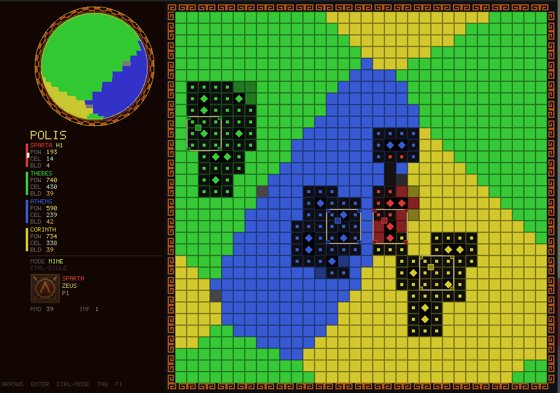
Późna gra — gracz wciąż aktywnyLate game — player still active
W późnej grze słabsze polis tracą terytorium gdy inflacja przewyższa dochód.
In late game, weaker poleis lose territory as inflation outpaces their income.
AUTO-SKIP (AUT)
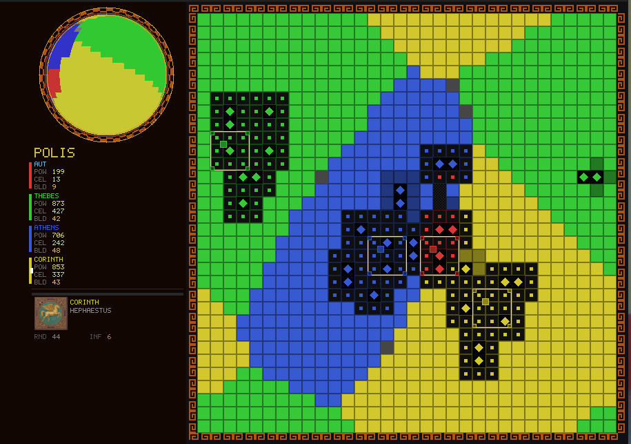
AUT — automatyczne pomijanie / auto-skip
Gdy polis nie ma dostępnych akcji wchodzi w tryb automatycznego pomijania. Tura przechodzi sama. Jeśli pojawi się możliwy ruch — odzyskujesz kontrolę.
When a polis has no available actions it enters auto-skip mode. The turn passes automatically. If a move becomes available you will regain control.
ZAMROŻENIE — MIASTO STAJE SIĘ RUINĄFREEZE — CITY BECOMES RUINS
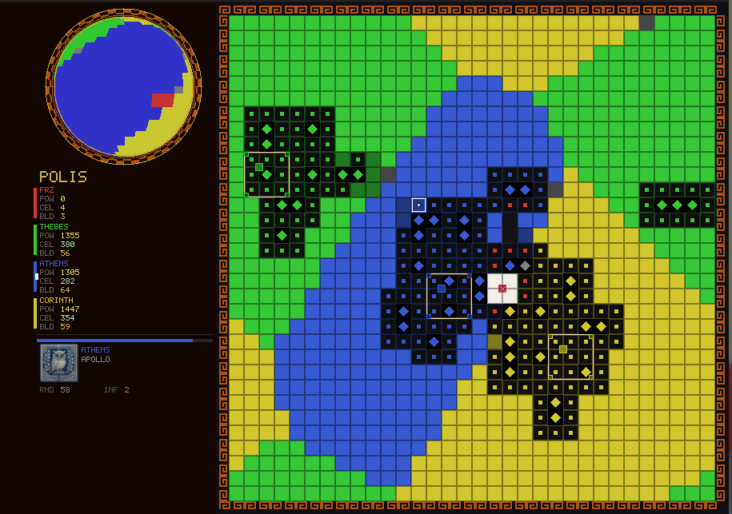
FRZ — miasto w ruinie / city becomes ruins
Gdy terytorium polis skurczy się do 4 komórek wokół miasta, zostaje ono zamrożone. Miasto staje się ruiną. Zamrożone polis nie wykonuje ruchów. Ostatnie aktywne polis trwa.
Bogowie patrzą. Hellada czeka.
Sic mundus creatus est.
When a polis's territory is reduced to 4 cells, it is frozen. The city becomes ruins. A frozen polis no longer acts. The last polis remaining active prevails.
The gods are watching. Hellas awaits.
Sic mundus creatus est.
KONTAKT I FEEDBACKCONTACT & FEEDBACK
To jest wersja beta. Twoja opinia ma znaczenie — każdy raport pomaga ulepszyć grę. Napisz nam co myślisz, co nie działa. Jeśli gra się zawiesiła — prześlij plik polis_log_*.txt z folderu gry wraz z opisem co się stało.
This is a beta release. Your feedback matters. Tell us what you think, what does not work. If the game crashed — send the file polis_log_*.txt from the game folder along with a description.